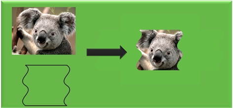

title: Improving the performance of Direct2D apps description: Describes techniques for improving Direct2D performance. ms.assetid: e6b02925-4e75-42b0-b0c4-00f1ddb85e46 keywords:
Although Direct2D is hardware accelerated and is meant for high performance, you must use the features correctly to maximize throughput. The techniques we show here are derived from studying common scenarios and might not apply to all app scenarios. Therefore, careful understanding of app behavior and performance goals can help achieve the results that you want.
A resource is an allocation of some kind, either in video or system memory. Bitmaps and brushes are examples of resources.
In Direct2D, resources can be created both in software and hardware. Resource creation and deletion on hardware are expensive operations because they require lots of overhead for communicating with the video card. Let's see how Direct2D renders content to a target.
In Direct2D, all the rendering commands are enclosed between a call to BeginDraw and a call to EndDraw. These calls are made to a render target. You must call the BeginDraw method before you call rendering operations . After you call BeginDraw , a context typically builds up a batch of rendering commands, but delays processing of these commands until one of these statements is true:
Until the primitives are flushed, Direct2D keeps internal references to corresponding resources like bitmaps and brushes.
As already mentioned, resource creation and deletion is expensive on hardware. So reuse resources when possible. Take the example of bitmap creation in game development. Usually, bitmaps that make up a scene in a game are all created at the same time with all the different variations that are required for later frame-to-frame rendering. At the time of actual scene rendering and re-rendering, these bitmaps are reused instead of re-created.
[!Note]
You can't reuse resources for the window resize operation. When a window is resized, some scale-dependent resources such as compatible render targets and possibly some layer resources must be re-created because the window content has to be redrawn. This can be important for maintaining the overall quality of the rendered scene.
Â
Because the Flush method causes the batched rendering commands to be processed, we recommend that you don't use it. For most common scenarios, leave resource management to Direct2D.
As mentioned earlier, resource creation and deletion are very expensive operations in hardware. A bitmap is a kind of resource that is used often. Creating bitmaps on the video card is expensive. Reusing them can help make the application faster.
Video cards typically have a minimum memory allocation size. If an allocation is requested that is smaller than this, a resource of this minimum size is allocated and the surplus memory is wasted and unavailable for other things. If you need many small bitmaps, a better technique is to allocate one large bitmap and store all the small bitmap contents in this large bitmap. Then subareas of the larger bitmap can be read where the smaller bitmaps are needed. Often, you should include padding (transparent black pixels) in between the small bitmaps to avoid any interaction between the smaller images during operations. This is also known as an atlas, and it has the benefit of reducing bitmap creation overhead and the memory waste of small bitmap allocations. We recommend that you keep most bitmaps to at least 64 KB and limit the number of bitmaps that are smaller than 4 KB.
There are some common scenarios for which a bitmap atlas can serve very well. Small bitmaps can be stored inside a large bitmap. These small bitmaps can be pulled out of the larger bitmap when you need them by specifying the destination rectangle. For example, an application has to draw multiple icons. All the bitmaps associated with the icons can be loaded into a large bitmap up front. And at rendering time, they can be retrieved from the large bitmap.
[!Note]
A Direct2D bitmap created in video memory is limited to the maximum bitmap size supported by the adapter on which it is stored. Creating a bitmap larger than that might result in an error.
Â
[!Note]
Starting in Windows 8, Direct2D includes an Atlas effect that can make this process easier.
Â
Creating shared bitmaps enables advanced callers to create Direct2D bitmap objects that are backed directly by an existing object, already compatible with the render target. This avoids creating multiple surfaces and helps in reducing performance overhead.
[!Note]
Shared bitmaps are usually limited to software targets or to targets interoperable with DXGI. Use the CreateBitmapFromDxgiSurface, CreateBitmapFromWicBitmap, and CreateSharedBitmap methods to create shared bitmaps.
Â
Creating a DXGI surface is an expensive operation so reuse existing surfaces when you can. Even in software, if a bitmap is mostly in the form you want except for a small portion, it is better to update that portion than to throw the whole bitmap away and re-create everything. Although you can use CreateCompatibleRenderTarget to achieve the same results, rendering is generally a much more expensive operation than copying. This is because, to improve cache locality, the hardware doesn't actually store a bitmap in the same memory order that the bitmap is addressed. Instead, the bitmap might be swizzled. The swizzling is hidden from the CPU either by the driver (which is slow and used only on lower-end parts), or by the memory manager on the GPU. Because of constraints on how data is written into a render target when rendering, render targets are typically either not swizzled, or swizzled in a way that is less optimal than can be achieved if you know that you never have to render to the surface. Therefore, the CopyFrom* methods are provided for copying rectangles from a source to the Direct2D bitmap.
CopyFrom can be used in any of its three forms:
Rendering a dashed line is a very expensive operation because of the high quality and accuracy of the underlying algorithm. For most of the cases not involving rectilinear geometries, the same effect can be generated faster by using tiled bitmaps.
Cache content if you render the same content frame over frame, especially when the scene is complex.
There are three caching techniques that you can use:
Let's look at each of these in more detail.
When you render static content, in scenarios like animation, create another full color bitmap instead of writing directly to the screen bitmap. Save the current target, set target to the intermediate bitmap, and render the static content. Then, switch back to the original screen bitmap and draw the intermediate bitmap on it.
Here's an example:
// Create a bitmap.
m_d2dContext->CreateBitmap(size, nullptr, 0,
D2D1::BitmapProperties(
D2D1_BITMAP_OPTIONS_TARGET,
D2D1::PixelFormat(
DXGI_FORMAT_B8G8R8A8_UNORM,
D2D1_ALPHA_MODE_PREMULTIPLIED),
dpiX, dpiY),
&sceneBitmap);
// Preserve the pre-existing target.
ComPtr<ID2D1Image> oldTarget;
m_d2dContext->GetTarget(&oldTarget);
// Render static content to the sceneBitmap.
m_d2dContext->SetTarget(sceneBitmap.Get());
m_d2dContext->BeginDraw();
…
m_d2dContext->EndDraw();
// Render sceneBitmap to oldTarget.
m_d2dContext->SetTarget(oldTarget.Get());
m_d2dContext->DrawBitmap(sceneBitmap.Get());
This example uses intermediate bitmaps for caching and switches the bitmap that the device context points to when it renders. This avoids the need to create a compatible render target for the same purpose.
When the full scene is not static, but consists of elements like geometry or text that are static, you can use a per primitive caching technique. This technique preserves the antialiasing characteristics of the primitive being cached and works with changing brush types. It uses an A8 bitmap where A8 is a kind of pixel format which represents an alpha channel with 8 bits. A8 bitmaps are useful for drawing geometry/text as a mask. When you must manipulate the opacity of static content , instead of manipulating the content itself, you can translate, rotate, skew, or scale the opacity of the mask.
Here's an example:
// Create an opacity bitmap.
m_d2dContext->CreateBitmap(size, nullptr, 0,
D2D1::BitmapProperties(
D2D1_BITMAP_OPTIONS_TARGET,
D2D1::PixelFormat(
DXGI_FORMAT_A8_UNORM,
D2D1_ALPHA_MODE_PREMULTIPLIED),
dpiX, dpiY),
&opacityBitmap);
// Preserve the pre-existing target.
ComPtr<ID2D1Image> oldTarget;
m_d2dContext->GetTarget(&oldTarget);
// Render to the opacityBitmap.
m_d2dContext->SetTarget(opacityBitmap.Get());
m_d2dContext->BeginDraw();
…
m_d2dContext->EndDraw();
// Call the FillOpacityMask method
// Note: for this call to work correctly the anti alias mode must be D2D1_ANTIALIAS_MODE_ALIASED.
m_d2dContext->SetTarget(oldTarget.Get());
m_d2dContext->FillOpacityMask(
opacityBitmap.Get(),
m_contentBrush().Get(),
D2D1_OPACITY_MASK_CONTENT_GRAPHICS);
Another per-primitive caching technique, called geometry realizations, provides greater flexibility when dealing with geometry. When you want to repeatedly draw aliased or anti-aliased geometries, it is faster to convert them to geometry realizations and repeatedly draw the realizations than it is to repeatedly draw the geometries themselves. Geometry realizations also generally consume less memory than opacity masks (especially for large geometries), and they are less sensitive to changes in scale. For more information, see Geometry Realizations Overview.
Here's an example:
// Compute a flattening tolerance based on the scales at which the realization will be used.
float flatteningTolerance = D2D1::ComputeFlatteningTolerance(...);
ComPtr<ID2D1GeometryRealization> geometryRealization;
// Create realization of the filled interior of the geometry.
m_d2dDeviceContext1->CreateFilledGeometryRealization(
geometry.Get(),
flatteningTolerance,
&geometryRealization
);
// In your app's rendering code, draw the geometry realization with a brush.
m_d2dDeviceContext1->BeginDraw();
m_d2dDeviceContext1->DrawGeometryRealization(
geometryRealization.Get(),
m_brush.Get()
);
m_d2dDeviceContext1->EndDraw();
Use more specific drawprimitive calls like DrawRectangle over generic DrawGeometry calls. This is because with DrawRectangle, the geometry is already known so rendering is faster.
In scenarios where the geometry is static, use the per-primitive caching techniques explained above. Opacity masks and geometry realizations can greatly improve the rendering speed of scenes that contain static geometry..
Applications that expect to render significant amounts of complex geometric content should consider specifying the D2D1_DEVICE_CONTEXT_OPTIONS_ENABLE_MULTI_THREADED_OPTIMIZATIONS flag when creating a Direct2D device context. When this flag is specified, Direct2D will distribute rendering across all of the logical cores present on the system, which can significantly decrease overall rendering time.
Notes:
Direct2D text rendering functionality is offered in two parts. The first part, exposed as the ID2D1RenderTarget::DrawText and ID2D1RenderTarget::DrawTextLayout method, enables a caller to pass either a string and formatting parameters or a DWrite text layout object for multiple formats. This should be suitable for most callers. The second way to render text, exposed as the ID2D1RenderTarget::DrawGlyphRun method, provides rasterization for customers who already know the position of the glyphs they want to render. The following two general rules can help improve text performance when drawing in Direct2D.
Both DrawText and DrawTextLayout enable an application to easily render text that is formatted by the DirectWrite API. DrawTextLayout draws an existing DWriteTextLayout object to the RenderTarget, and DrawText constructs a DirectWrite layout for the caller, based on the parameters that are passed in. If the same text has to be rendered multiple times, use DrawTextLayout instead of DrawText, because DrawText creates a layout every time that it is called.
Set the text antialias mode to D2D1_TEXT_ANTIALIAS_MODE_GRAYSCALE explicitly. The quality of rendering grayscale text is comparable to ClearType but is much faster.
Use full scene or per primitive bitmap caching like with drawing other primitives.
The figure here shows the result of applying a clip to an image.

You can get this result by using layers with a geometry mask or the FillGeometry method with an opacity brush.
Here's an example that uses a layer:
// Call PushLayer() and pass in the clipping geometry.
m_d2dContext->PushLayer(
D2D1::LayerParameters(
boundsRect,
geometricMask));
Here's an example that uses the FillGeometry method:
// Create an opacity bitmap and render content.
m_d2dContext->CreateBitmap(size, nullptr, 0,
D2D1::BitmapProperties(
D2D1_BITMAP_OPTIONS_TARGET,
D2D1::PixelFormat(
DXGI_FORMAT_A8_UNORM,
D2D1_ALPHA_MODE_PREMULTIPLIED),
dpiX, dpiY),
&opacityBitmap);
m_d2dContext->SetTarget(opacityBitmap.Get());
m_d2dContext->BeginDraw();
…
m_d2dContext->EndDraw();
// Create an opacity brush from the opacity bitmap.
m_d2dContext->CreateBitmapBrush(opacityBitmap.Get(),
D2D1::BitmapBrushProperties(),
D2D1::BrushProperties(),
&bitmapBrush);
// Call the FillGeometry method and pass in the clip geometry and the opacity brush
m_d2dContext->FillGeometry(
clipGeometry.Get(),
brush.Get(),
opacityBrush.Get());
In this code example, when you call the PushLayer method, you don't pass in an app created layer. Direct2D creates a layer for you. Direct2D is able to manage the allocation and destruction of this resource without any involvement from the app. This allows Direct2D to reuse layers internally and apply resource management optimizations.
In Windows 8 many optimizations have been made to the usage of layers and we recommend you try using layer APIs instead of FillGeometry whenever possible.
The ID2D1DeviceContext interface is derived from the ID2D1RenderTarget interface and is key to displaying Direct2D content in Windows 8, for more information about this interface see Devices and Device Contexts. With the device context interface, you can skip calling the CreateLayer method and then pass NULL to the ID2D1DeviceContext::PushLayer method. Direct2D automatically manages the layer resource and can share resources between layers and effect graphs.
If the region to be clipped is aligned to the axis of the drawing surface, instead of arbitrary. This case is suited for using a clip rectangle instead of a layer. The performance gain is more for aliased geometry than antialiased geometry. For more info on axis aligned clips, see the PushAxisAlignedClip topic.
Direct2D can interoperate seamlessly with Direct3D surfaces. This is very useful for creating applications that render a mixture of 2D and 3D content. But each switch between drawing Direct2D and Direct3D content affects performance.
When rendering to a DXGI surface, Direct2D saves the state of the Direct3D devices while rendering and restores it when rendering is completed. Every time that a batch of Direct2D rendering is completed, the cost of this save and restore and the cost of flushing all the 2D operations are paid, and yet, the Direct3D device is not flushed. Therefore, to increase performance, limit the number of rendering switches between Direct2D and Direct3D.
When you create a render target, you can use the D2D1_PIXEL_FORMAT structure specify the pixel format and alpha mode used by the render target. An alpha channel is part of the pixel format that specifies the coverage value or opacity information. If a render target does not use the alpha channel, it should be created by using the D2D1_ALPHA_MODE_IGNORE alpha mode. This spares the time that is spent on rendering an alpha channel that is not needed.
For more information about pixel formats and alpha modes, see Supported Pixel Formats and Alpha Modes.
When you analyze performance hot spots in a scene that will be rendered, knowing whether the scene is fill-rate bound or vertex bound can provide useful information.
You can analyze your scene complexity by altering the size of the render target. If performance gains are visible for a proportional reduction in size of the render target, then the application is fill-rate bound. Otherwise, the scene complexity is the performance bottleneck.
When a scene is fill-rate bound, reducing the size of the render target can improve the performance. This is because the number of pixels to be rendered will be reduced proportionally with the size of the render target.
When a scene is vertex bound, reduce the complexity of the geometry. But remember that this is done at the expense of image quality. Therefore, a careful tradeoff decision should be made between the desired quality and the performance that is required.
Direct2D offers compatibility with printing. You can send the same Direct2D drawing commands (in the form of Direct2D command lists) to the Direct2D print control for printing, if you don't know what devices you are drawing to, or how the drawing is translated to printing.
You can further fine-tune their usage of the Direct2D print control and your Direct2D drawing commands to deliver printing results with better performance.
The Direct2D print control outputs debug messages when it sees a Direct2D code pattern that leads to lower printing quality or performance (like, code patterns listed later in this topic) to remind you where you can avoid performance problems. To see those debug messages, you need to enable Direct2D Debug Layer in your code. See Debug Messages for instructions to enable debug message output.
There are three properties that you can set when you create the Direct2D print control. Two of these properties impact how the Direct2D print control handles certain Direct2D commands and in turn impact the overall performance.
There are differences between what Direct2D can represent visually and what the print subsystem can maintain and transport along the whole print pipeline. The Direct2D print control bridges those gaps by either approximating or rasterizing Direct2D primitives that the print subsystem doesn't natively support. Such approximation usually results in lower printing fidelity, lower printing performance, or both. Therefore, even though a customer can use the same drawing patterns for both screen and print rendering, it is not ideal in all cases. It's best not to use such Direct2D primitives and patterns as much as possible for the print path, or to do you own rasterization where you have full control of the quality and the size of the rasterized images.
The here is a list of cases where the print performance and quality won't be ideal and the you might want to consider varying the code path for optimal print performance.
Direct2D has several optimizations when rendering texts to display for better performance and/or better visual quality. But not all optimizations improve the printing performance and quality since the printing on paper is usually in a much higher DPI, and printing does not need to accommodate scenarios like animation. So, we recommend you draw the original text or glyphs directly and avoid any of the following optimizations when creating the command list for printing.
If the target bitmap is a JPEG, PNG, TIFF, or JPEG-XR, you can create a WIC bitmap either from a disk file or from an in-memory stream, then create a Direct2D bitmap from that WIC bitmap using ID2D1DeviceContext::CreateBitmapFromWicBitmap, and finally directly pass that Direct2D bitmap to the Direct2D print control without further manipulation. By doing so, the Direct2D print control is able to reuse the bitmap stream, which usually leads to better printing performance (by skipping redundant bitmap encoding and decoding), and better printing quality (when metadata, such as color profiles, in the bitmap will be preserved).
Drawing the original bitmap provides the following benefit for applications.
However, an you can't opt in such optimization because:
Although Direct2D is hardware accelerated and is meant for high performance, you must use the features correctly to maximize throughput. The techniques we looked at here are derived from studying common scenarios and might not apply to all application scenarios.
Â
Â